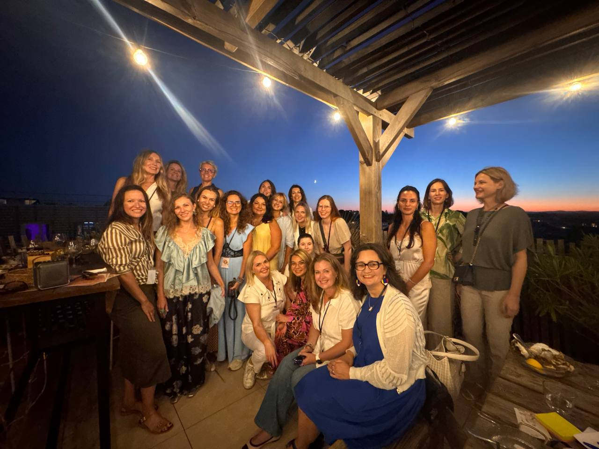

Акт I. Прибытиегод–два
УРА!
Эйфория, круассаны и «я справлюсь». Вы главный герой — пока работает адреналин и всё вокруг ново.
Помогаю эмигрантам снова почувствовать «я на своём месте» — в работе и жизни. Без марафонов, вибраций и «просто потерпи первые пять лет».
30 минут, онлайн, на русском. Бесплатно. Идеально сформулированный запрос не нужен.
Я приехала во Францию с 3 000 $ и без языка. Спойлер: выжила. А потом начала жить.
Сначала всё как в трейлере: новые улицы, новая жизнь, «у меня точно получится». Потом приходит реальность — и однажды вы замечаете, что играете эпизодическую роль в собственной жизни.
Почему на пятом этапе? После «дзынь» большинство либо годами живут на заднем плане, либо уезжают обратно с ощущением провала. Пересборка — момент, когда вы решаете, кем будете в этой стране. Его можно пройти в одиночку, но с коучем быстрее и без самонасилия.
Эйфория, круассаны и «я справлюсь». Вы главный герой — пока работает адреналин и всё вокруг ново.
Статус обнулился, профессия не работает, деньги тают, жизнь на паузе. Вы всё ещё в кадре, но уже на заднем плане.
Вы снова главный герой — и это не зависит от страны, паспорта и уровня местного языка. Этот акт мы пишем вместе.
Я работаю с теми, кто хочет твёрдое чувство «я герой своего фильма» — в любой стране, где живёт и работает.
Эти фразы я слышу почти на каждом знакомстве. Половину из них когда-то говорила сама.
«Там я была кем-то. Здесь я никто».
Статус обнулился вместе с пропиской. Диплом превратился в красивую бумажку, а связи остались в другом часовом поясе.
«Моя профессия здесь не работает».
Работа «пока что» тихо превращается в работу «навсегда». А резюме на местном языке читается как чужая биография.
«Хочу своё дело. Но с чего начать в этой бюрократии?»
Налоговая, соцслужбы, банк, который не открывает счёт, — попробуй объясни всё это на языке уровня А1. Идея есть. Разрешения себе — нет.
«Жизнь на паузе: жду документы, язык, партнёра, понедельник».
Всё важное отложено на «потом, когда устроюсь». Это «потом» длится уже второй год.
Коротко и без драматичной музыки. Полная версия — в моих историях.
Маркетинг, продажи, своё агентство, наставничество для бизнес-трекеров. Казалось, жизнь собрана. Казалось.
Я сказала вслух, что думаю. Проекты в регионе закрылись в одностороннем порядке. Под аккомпанемент балета по телевизору.
Новосибирск, Казахстан, ОАЭ, Франция. Голодные игры, только без спецэффектов и красивых костюмов.
Без языка, без связей, со статусом «невидимка». Круассаны у Эйфелевой башни в программу не входили.
Разделить себя пополам не получилось. Поэтому я пошла учиться на коуча — официально, с дипломами и супервизиями.
Своя практика, сообщество Women at Work и французский, который всё ещё квест. Я на своём месте. И знаю дорогу.


Самое честное, что я знаю про эмиграцию: сначала «Свобода!», а через минуту — «#@$%! А куда плыть?»
Читать историиАдаптация — это подстроиться под чужие правила. Я помогаю написать свои: для работы, денег и жизни — в какой бы стране вы ни жили.
Европа, Азия, Америка или Ближний Восток — боли у эмигрантов похожие. А вход в работу у каждого сезона свой.
«Ехать или нет — и с чем я туда еду?»
Для тех, кто планирует релокацию.
«Чем мне здесь заниматься и как начать зарабатывать?»
Для тех, кто переехал недавно.
«Я вроде прижилась. Но это точно моя жизнь?»
Для тех, кто живёт за границей давно.
Чтобы вы сразу понимали, куда пришли. И куда не пришли.
Русскоязычная диаспора маленькая: сегодня вы на сессии, завтра на одной вечеринке с половиной города. Поэтому я работаю только индивидуально. На программу заключаем договор на русском и английском.
Всё, что вы приносите на сессию, остаётся между нами. Как в Вегасе, только по договору.

Экономист, 18 лет в бизнесе, своё агентство в Красноярске и 4 года наставничества для бизнес-трекеров. Потом — эмиграция и новая профессия с чистого листа.
Утешать не буду. Готовых рецептов тоже не дам. Я зеркало, которое не льстит: задаю неудобные вопросы, останавливаю, когда вы уходите в оправдания, и называю вещи своими именами. Ломать себя — самая убыточная стратегия в мире. Проверено лично.
Образование: Coaching.Up University, Level 1 (программа по стандартам ICF) и Level 2 (программа аккредитована EMCC и Association for Coaching). Сейчас прохожу сертификацию ICF на уровень PCC.
Начните с бесплатного знакомства: 30 минут, чтобы понять, есть ли между нами мэтч и какой формат вам нужен.
0 €30 минут, онлайн
30 €60 минут. Сначала бесплатное знакомство, оплата — перед сессией
600 €Цена действует до марта 2027 года.
Программу на 3 месяца обсуждаем на знакомстве: согласуем цель и частоту встреч, подписываем договор, и только потом я отправляю ссылку на оплату. Оплату в €, $, ₽, ₸ или ₴ можно согласовать в переписке. Отзывы клиентов — в Telegram
Нет. Коучинг работает с целями, решениями и действиями в вашей текущей ситуации. Я не ставлю диагнозов и не лечу. Если вашему запросу нужен психолог, скажу прямо и подскажу, куда обратиться.
Да, это «Сезон 0». Чем раньше вы поймёте, с чем и зачем едете, тем меньше сюрпризов будет на месте.
Нет. Работаем онлайн на русском, с клиентами из разных стран. Мой опыт — французский, а механика эмиграции у всех удивительно похожая.
Да. Своё дело в новой стране — один из главных сюжетов. 18 лет бизнеса никуда не делись: доход, клиенты и решения собственника — моя родная территория.
Для этого и есть бесплатное знакомство. Если коучинг сейчас не то, что вам нужно, я скажу честно и не буду уговаривать.
Полностью, в рамках профессиональной этики. На программу заключаем договор. Кейсы без вашего согласия нигде не появляются.
Новая страна у вас уже есть. Осталось написать свои правила и найти своё место. Начнём с 30 минут.